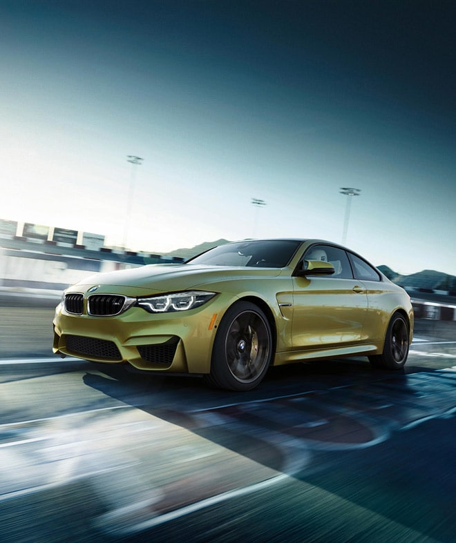

M4
POWER TRIP.

With carefully engineered Carbon Fiber Reinforced Plastic components, incredibly precise handling, and exclusive M colors like Yas Marina Blue and Austin Yellow, the BMW M4 Coupe and Convertible are true evolutions of the M concept.
7:52 NÜRBURGRING LAP TIME
3.8 0-60 MPH WITH COMPETITION PACKAGE
444 HP WITH COMPETITION PACKAGE
HIGHLIGHTS
FEATHERWEIGHT HEAVY HITTER.
Weight-saving racer. The lighter the vehicle, the faster it can move. The engine brace, trunk lid, and the Coupe’s roof are made of incredibly strong, lightweight Carbon Fiber Reinforced Plastic (CFRP) components – designed to reduce weight while enhancing maneuverability and strength.
EXPOSED PERFORMANCE.
Push every component to the next level. Aluminum control arms shed additional weight from the BMW M4, while the rear-axle subframe with solid mounts is bolted directly to the body without bushings – allowing for the tightest possible handling.
PROACTIVE TECHNOLOGY.
Master of maneuver. The Active M Differential uses Dynamic Stability Control data, pedal position, wheel rotation, and yaw rate to act on each wheel before any of them breaks free. And with advanced driving technology like Park Distance Control and Active Driving Assistant included as standard, the BMW M4 is ready for any road.
GET SOME POWER BEHIND YOU.
Power isn’t just under the hood. The BMW M4 includes an integrated rear spoiler made of lightweight Carbon Fiber Reinforced Plastic which keeps the weight off while creating rear down-force.
YOU’LL NEVER BE PINNED TO A NICER SEAT.
Power position. Even the lightweight 10-way power front M sport seats are performance-oriented. They boast 4-way lumbar support, power-adjustable side bolsters and integrated headrests—all with a backlit M Logo prominently featured on the backrest.
SEE BEFORE YOU SHIFT.
Heads up. The Full-Color M-Specific Head-Up Display projects all of the information you want to see right in to your line of sight. Your speed, selected gear, and a color-specific digital engine rev-counter with shift lights are all projected right where you’re looking—at every corner and straightaway.
SHIFT LIKE A PRO.
Choose your control. An optional 7-speed M Double-clutch transmission with paddle shifters provides instantaneous track-inspired shifts, but for the purists who want an analog connection to the road, a 6-speed manual transmission comes standard.
*Disclaimer all the content on this page is taken from BMW USA